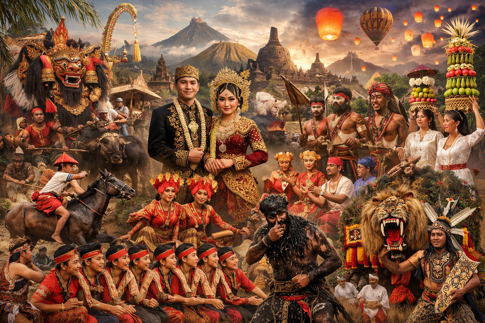
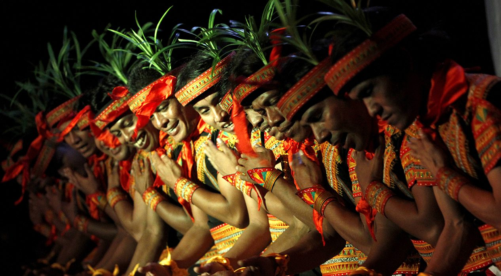
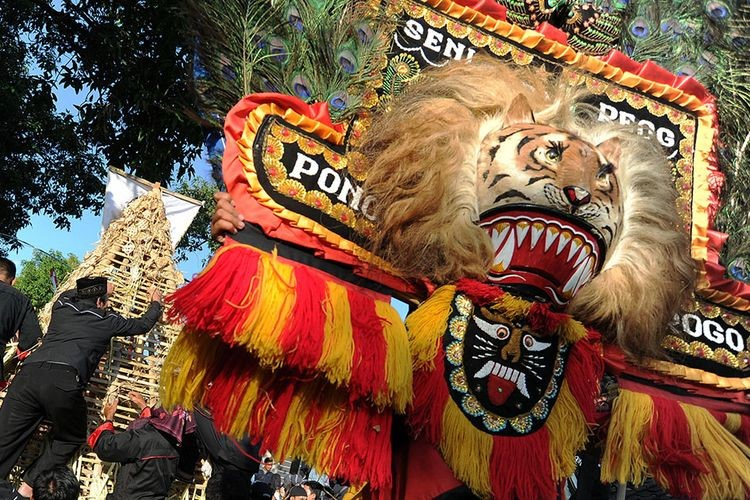
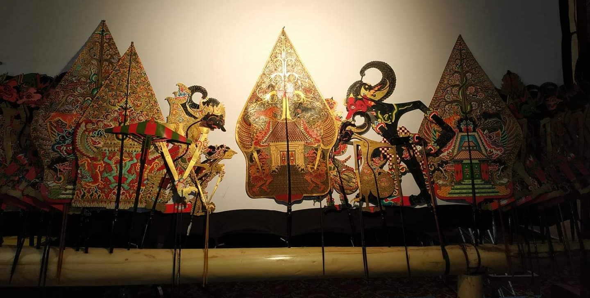
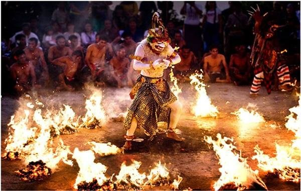

✕
Menyaksikan keagungan warisan budaya Indonesia yang dibalut dalam pengalaman digital yang imersif dan elegan.
Mulai Penjelajahan ✦
Menyelami ragam ekspresi seni pertunjukan yang menjadi identitas dan kebanggaan bangsa.



